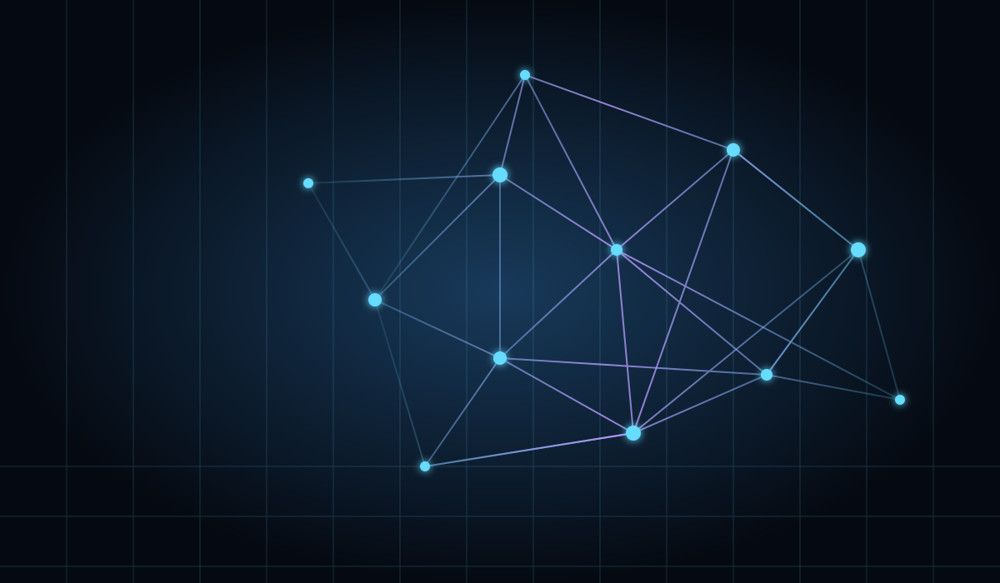
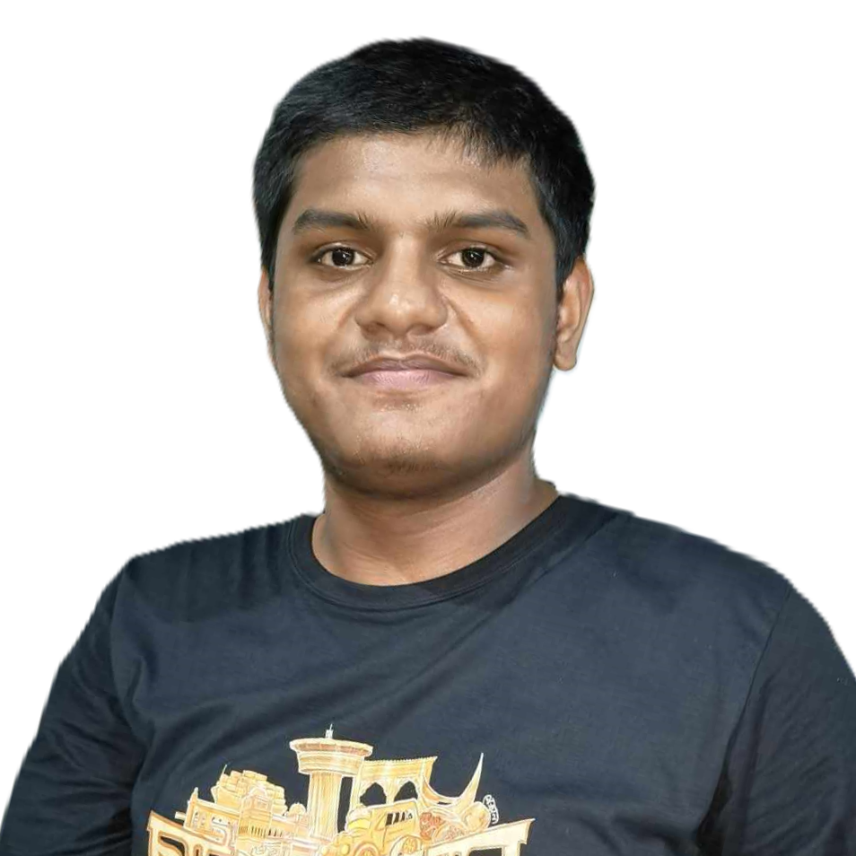
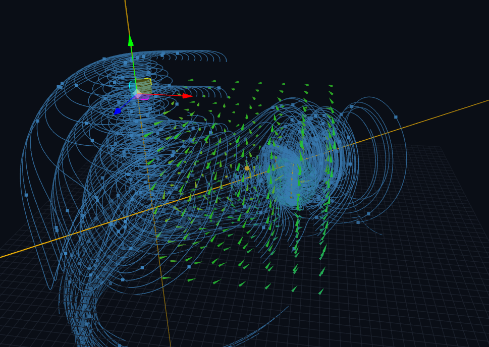
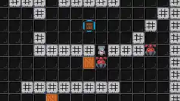

Graph Universe
An interactive exploration of graph theory: turn abstract vertices, edges, and structures into something you can inspect and experiment with.
EXPLORE THE PROJECT ↗I’m Muhammed Maruf-Ur-Rashid, an undergraduate studying Computer Science & Engineering at BUET. This is my personal laboratory for software, research, mathematical ideas, and experiments still taking shape.
Observe the system. Understand the mechanism. Build, test, revise.
CURRENT MODE: LEARNING BY MAKING

I’m interested in how ideas become understandable systems: how an algorithm behaves, how a mathematical model describes something real, and how code can make an abstract concept easier to explore. I want this website to document the process, not just the polished result.

An interactive exploration of graph theory: turn abstract vertices, edges, and structures into something you can inspect and experiment with.
EXPLORE THE PROJECT ↗A visual companion to the project, documenting its ideas and exploring the structures behind graph theory through a more narrative lens.
READ THE BLOG ↗
Explore electromagnetic fields through a hands-on lab built around the equations that connect electric and magnetic phenomena.
OPEN THE LAB ↗
A game project developed in C and raylib, with its source code and development history available in the repository.
OPEN REPOSITORY ↗Bangladesh University of Engineering and Technology · Dhaka, Bangladesh